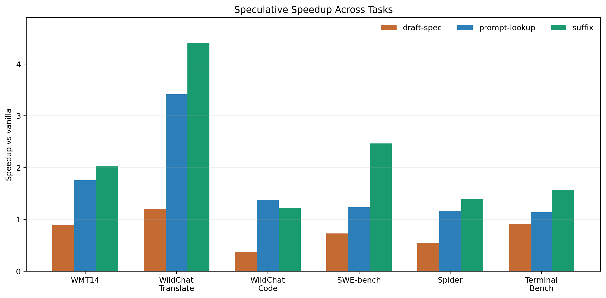
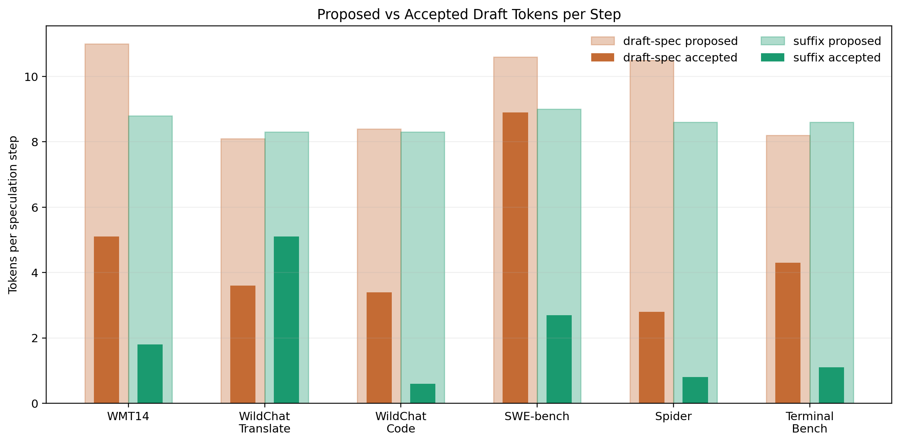
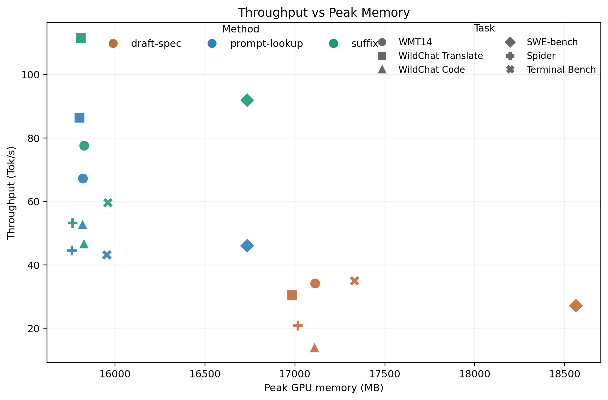

MLSys Project Poster
Suffix Speculative Decoding for Faster LLM Serving
Suffix-based speculation improves LLM serving throughput without a separate draft model.
2.02x
WMT14 speedup over vanilla
4.40x
WildChat translate speedup
2.47x
SWE-bench speedup
Problem
Autoregressive decoding is the bottleneck
Large language models generate one token per target-model forward pass, which directly limits throughput and increases latency.
Gap in transformers
No first-class suffix speculation path
Hugging Face already supports draft-model speculation and prompt lookup, but not suffix speculative decoding inside the assisted generation stack.
Completed Contribution
We added suffix decoding plus a benchmark harness
Our finished system extends generate() with a
suffix-based candidate generator and benchmarks it against unified
baselines on Modal.
Figure 1
How suffix decoding compares to the other inference paths
One shared visual explains vanilla decoding, draft-model speculation, prompt lookup, and our suffix-based method.

What the figure clarifies
It shows that all speculative methods still depend on target-model verification. What changes is how candidate tokens are proposed before that verification step.
What is special about suffix decoding
Suffix decoding avoids an auxiliary draft model and extends beyond exact prompt reuse by proposing continuations from repeated substrings found in context.
WIP Extension
Tree-Based Verification
The completed claim is the linear suffix proposal path shown here. Multi-branch verification remains future work and is intentionally outside the reported results.
Main speedup vs. vanilla
Workloads: WMT14, WildChat translate, WildChat code, SWE-bench

Takeaway: Suffix speculation beats vanilla on all four completed workloads and is usually the best method overall.
Suffix source-mode ablation
Compare local, local+global, and
global-only

Takeaway: Local matching drives most of the benefit; global-only matching is usually weak and sometimes harmful.
Acceptance rate is not the whole story
Compare proposed support against accepted tokens per step

Takeaway: High acceptance rate does not guarantee speed; suffix decoding can win even with lower raw acceptance.
Throughput vs. peak GPU memory
Memory stays near vanilla and prompt lookup while throughput climbs

Takeaway: Suffix decoding stays close to vanilla and prompt lookup on memory, unlike draft-model speculation.
Conclusion
What the poster should leave people with
- Suffix speculative decoding consistently outperforms vanilla decoding.
- It often outperforms prompt lookup while avoiding a separate draft model.
- Cheap proposals matter more than raw acceptance rate for end-to-end serving speed.
Future Work
Tree-Based Attention / Verification (WIP)
Reserve this panel for a branch-verification diagram once the implementation stabilizes.
- Verify multiple candidate branches in one target-model pass.
- Reuse the same assisted-generation boundary as the suffix path.